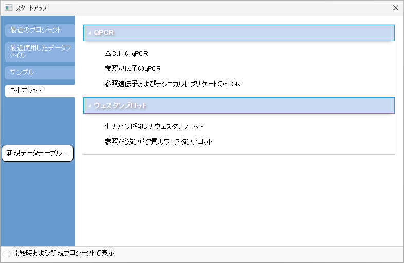

<h1 class="firstHeading">ラボアッセイ</h1><p class='urlname' style='display: none'>Lab-Assays</p>
<p>Originには、生物統計学のルーチンを効率化するためのテンプレートが用意されています。
</p>
<dl><dd><a  class="image"></a></dd></dl>
<p><br />
</p>
<table class="topiclist">
<tr>
<td>
<p><i><b>このセクションで説明している項目：</b></i>
</p>
<div class="CategoryTreeTag" data-ct-mode="20" data-ct-options="{&quot;mode&quot;:20,&quot;hideprefix&quot;:10,&quot;showcount&quot;:false,&quot;namespaces&quot;:false}"><li> <a class="CategoryTreeLabel  CategoryTreeLabelNs114 CategoryTreeLabelPage" href="../../UserGuide/UserGuide/QPCR.html">QPCR</a></li>
		
		<li> <a class="CategoryTreeLabel  CategoryTreeLabelNs114 CategoryTreeLabelPage" href="../../UserGuide/UserGuide/Western_Blot.html">ウェスタンブロット</a></li>
		
		</div>
</td></tr></table>


    